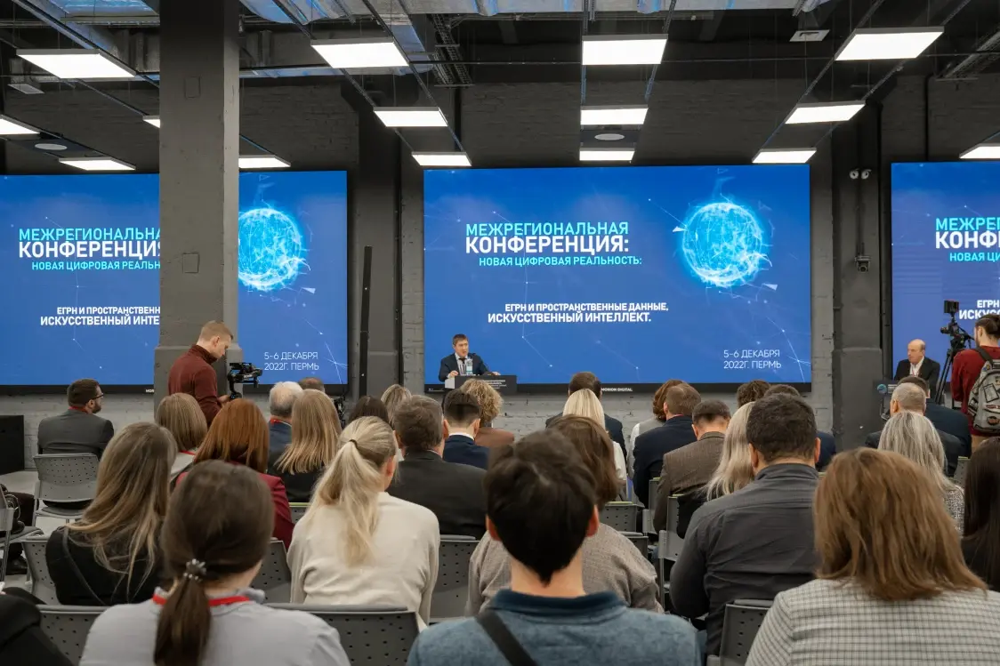

Современные мультимедийные конференц-залы
Современные конференц-залы оснащаются профессиональными мультимедийными решениями для проведения презентаций и совещаний. Большие экраны обеспечивают качественную визуализацию контента. Системы видеоконференцсвязи с профессиональной акустикой создают эффект присутствия. Централизованное управление мультимедиа позволяет быстро подготовить зал к мероприятиям. Беспроводные технологии обеспечивают удобную демонстрацию материалов с любых устройств.
Выбрать формат